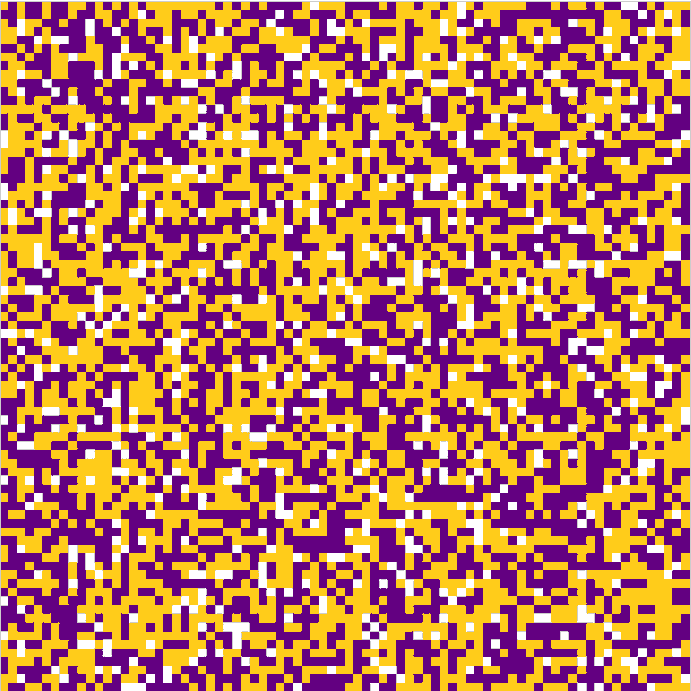
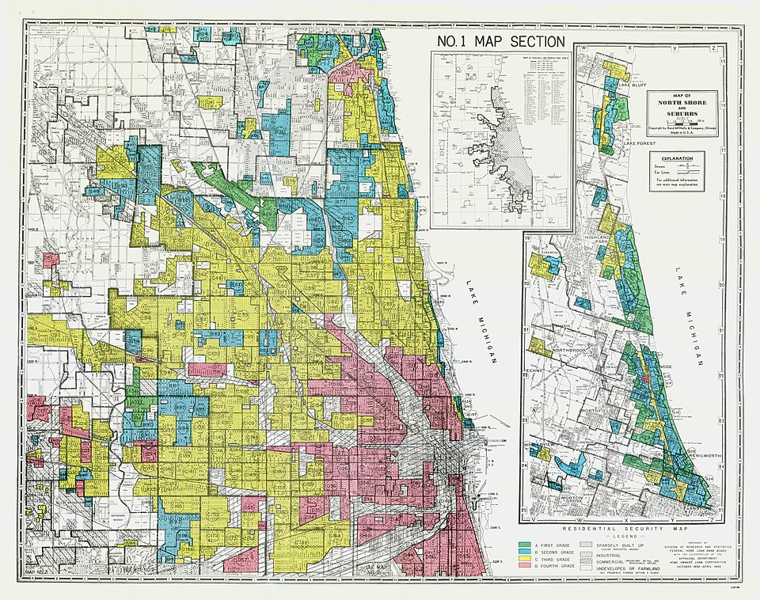
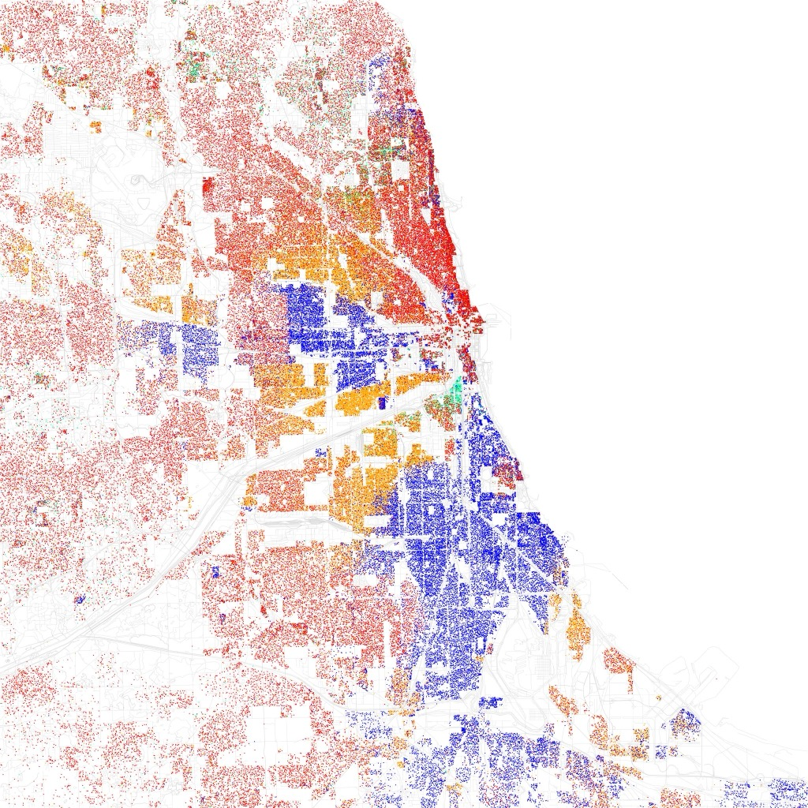

Emergence / 創発
「隣人の三割が自分と同じ属性ならそれでいい」。誰も排他的でないのに、盤上では色が勝手にまとまっていく。個人の選好とマクロの結果のあいだに、単純な一致などない。
トーマス・シェリングが Dynamic Models of Segregation を Journal of Mathematical Sociology に発表。手動のコイン盤面から社会科学の古典が生まれた年。
この年、Pentagon Papers がニューヨーク・タイムズに流出。Intel が世界初のマイクロプロセッサ 4004 を発表し、計算機の時代が始まる。
分居(=住み分け)モデルは、シェリングが飛行機の中でグラフ用紙に X と O を書きながら思いついた。計算機には頼らなかった。盤上に米国硬貨2種(ペニー1¢=銅色 / ダイム10¢=銀色)を並べただけで、分断の自発的発生を示した。
引越し先の内見に立ち会うとき、自分では意識していないつもりでも、隣人の雰囲気をどこかで測っている。似た暮らしをしている人が、少しはこの界隈にいるだろうか——そんな小さな確認を、気配で済ませている。
それは差別ではない。少なくとも、そう自分で思う範囲のことだ。隣人が誰であろうと構わない、ただ「完全に孤立はしたくない」だけだ。子育て世代なら同世代が、単身者なら単身の階が、外国語話者なら母語の通じる家族が、どこかに一組でもいればいい。人は、その程度には選好を持っている。
そのごくわずかな選好が、街全体を色分けする。
全員が穏当な選好しか持たない社会でも、マクロの分断は勝手に立ち上がる。個人の意図を集計しても、集団の結果は予測できない——盤上でそれを実際に動かして確かめる。
都市の地図を属性ごとに色分けしてみると、人々はかたまっている。米国の人種別居住区が典型で、白人の街と黒人の街がはっきり分かれている。日本でも、外国人労働者の集住地、富裕層の住む高級住宅街、若い単身者が集まる駅近の街——粒度の差はあるが、似た現象は世界中の都市にある。こうした分断を見ると、私たちはつい「住民のなかに強い差別意識を持つ人がいるから」「誰かが他者を排除しているから」と考えたくなる。実際、そういう力が働いている都市は多い。けれど 1971 年、経済学者トーマス・シェリングが格子紙とコインだけで示したのは、それとは別のことだった。「隣人の三割ほどが自分と同じ属性ならそれでいい」——そんな極めて穏当穏当 (おんとう)おだやかで、ほどほどの程度。極端ではないこと。「穏当な選好」とは、強い差別意識ではなく「同じ仲間がほんの少しは近くにいてほしい」程度の控えめな好みのこと。な選好の持ち主ばかりを集めても、社会は勝手に色分けを始める。意図なく、しかし急速に。
「誰も強く差別していないなら、街は穏やかに混ざるはずだ」——この素朴な期待は、シェリングの盤面の前であっけなく崩れる。彼の発見が私たちから奪うのは、結論ではない。安心感のほうだ。これは創発創発 (Emergence)個々の要素が単純なルールで相互作用することで、要素単体では説明できない秩序やパターンが全体として立ち現れる現象。の典型例で、ミクロの動機からマクロの結果が直接予測できない、という事実だけが残る。
Thomas C. Schelling
Economist / 1921–2016
カリフォルニア生まれ。マーシャルプラン、ホワイトハウスを経て、Harvard 大学で 32 年間教鞭をとった。代表作『紛争の戦略』(1960) は核抑止のゲーム理論的分析。1971 年の分居モデルは、核戦略研究の合間に生まれた副業的研究だった。2005 年 ノーベル経済学賞ノーベル経済学賞正式名称は「アルフレッド・ノーベル記念スウェーデン国立銀行経済学賞」。1968 年にスウェーデン国立銀行が創設し、ノーベル財団が運営する。を Robert Aumann と共同受賞。
Photo: New America / CC BY 2.0
街が分断されるのは、住民のなかに強い差別主義者がいるからだ。差別さえなくなれば分離も消える。
強い差別がなくても、「三割ほど同じ属性がいてほしい」という穏当な選好だけで、完全な分離は起きる。攻撃的な意図はモデルに一切登場しない。
住民がもっと寛容になれば、分離は滑らかに消えていく。
寛容度を一割まで下げても、小さな同色のかたまりは残る。完全にランダムな混ざり合いを積極的に望まない限り、分離はデフォルトで発生する。
モデルは住宅分離を十分に説明する。経済や制度は副次的要因だ。
現実の住宅分離は、所得格差・住宅価格・歴史的な赤線引き(redlining)など、モデルに含まれない要因が大きい。シェリング自身もモデルの射程を謙虚に限定していた。
シェリング 1971 — 盤上のコイン実験
8×8 盤面 / ●=ペニー(1¢) / ○=ダイム(10¢) / 同色2/4以下なら移動
Step 1
初期配置
Step 2
数ステップ後
Step 3
さらに進行
Step 4
収束後
図1. シェリング 1971 年論文の盤上実験の再現イメージ。Step 1 のランダムな混在から、Step 4 の完全に色分けされた状態へ。各コインは「周囲の同色が半数未満なら別の空マスに移る」とだけ決めている。誰も相手を追い出していない。
コインを動かしているのは、ただ一つの規則だけだ。それなのに、盤の上では明らかに「同色のかたまり」が立ち上がってくる。シェリング自身、この発見の意味を、論文の冒頭でこう要約している——
"This is an abstract study of the interactive dynamics of discriminatory individual choices… The systemic effects are found to be overwhelming: there is no simple correspondence of individual incentive to collective results."
これは差別的な個人選択の相互作用を抽象的に扱う研究である。……見出されるシステム的影響は圧倒的だ——個人の動機と集団的結果のあいだには、単純な対応関係など存在しない。
— Thomas C. Schelling, Dynamic Models of Segregation (1971)
モデルは驚くほど簡素だ。格子の各マスに住民(二色のどちらか)または空き地を置く。住民は周囲 8 マス、いわゆるムーア近傍ムーア近傍 (Moore neighborhood)格子状の空間で、あるマスを囲む上下左右と斜めの計 8 マスを「近傍(きんぼう)」とみなす定義。斜めを除いた 4 マスだと「フォン・ノイマン近傍」と呼ぶ。を見渡し、そのうち居住者のうち同色の比率を計算する。比率が「寛容度」と呼ばれる閾値閾値 (いきち)ある量を超えるか超えないかで、結果がガラッと変わる境目の値。寛容度が「閾値」とは、住民が「これより少なければ引越す、これ以上なら留まる」と判断する境目の数値のこと。を下回れば、その住民は空きマスへ引っ越す。たったそれだけの規則で、シェリングは盤上を動かした。計算機も統計も使わず、自宅の食卓で。
ムーア近傍での同色率 ≥ 寛容度 ならその場に留まる
図2. 中央(太枠)の「自分」が周囲 8 マスの居住者を見て、同色率を計算する。閾値以上なら満足、未満なら引越し。
言葉で読むのと、目の前で動くのとでは、納得の深さがちがう。ただし、いきなり大きな盤を走らせると、何が起きているのか目で追えない。まずは 7×7 の小さな盤で、ルールを 1 手ずつ追って体に入れる。それから、本物のスケールに進む。
遊びかた
赤枠で囲われている住民が「不満な人」——周囲 8 マスのうち、同色が 30% に届いていない。「次の1手」を押すと、不満な住民が空マスへ引っ越す。誰も不満でなくなれば収束。それまで何手かかるか見てほしい。
読み込み中…
ルールが体に入ったら、規模を 30×30 に上げて、寛容度を自分で動かしてみる。最初に試してほしいのは、寛容度 30% のまま「再生」を押すことだ。十数ステップで、ランダムに混ざっていた点がかたまりに分かれていく。それから寛容度を 10% まで下げる。「同じ仲間が一人でもいればほぼ満足」という、ほとんど寛容極まる設定だ——それでも、小さな色の島は残る。
このシミュレーターで確認できること
丸ひとつひとつが「住民」——二色のどちらかの属性を持つ。各住民は周囲 8 マスを見渡し、同色が寛容度の割合以上いるなら留まる。未満なら、ランダムな空マスへ引っ越す。寛容度 30% で再生すると、意図なくしてクラスタが成長するのが見える。
Schelling (1971) の概念を 30×30 格子で再現した簡易実装。各ステップで不満な住民を一括で空マスへ移す。分離指数は 0=完全混合、1 に近いほど分離。現実の住宅分離の定量予測ではなく、創発のデモンストレーション。
このシミュレーターで、少なくとも三つの発見が待っている。一つ、寛容度およそ 30%(=約 1/3)がティッピングポイントティッピングポイント (Tipping point)ある量が少しずつ変化する途中で、ある閾値を超えた瞬間に系の状態が不連続に変わる臨界点。寛容度およそ 1/3 を境に、街の見え方が「ほぼ混在」から「ほぼ分離」へ急に切り替わる。で、これを超えると分離は加速する。二つ、寛容度 10% でも部分的に色が固まるが、寛容度 0%(同色がゼロでも構わない)にするとランダム配置のまま動かない。三つ、寛容度 70% では誰も満足できない。「まわりの 7 割が同じでなければ嫌だ」と全員が思うと、どの配置にも不満が残り、盤は収束しない。
図3. 寛容度を横軸に、収束後の分離指数を縦軸に取ると、閾値 1/3 付近で鋭く立ち上がる。少しの差で結果が大きく変わる、典型的なティッピングポイントティッピングポイントある量が少しずつ変化するうち、ある閾値を越えた瞬間に系の状態が不連続に変わる臨界点。。
走らせたあとで気づくのは、そこには「悪意」という変数がどこにもないことだ。プログラムに書かれているのは、「自分の周りの 30% だけは確保したい」という、あまりに控えめな一文に過ぎない。それでも、結果は完全に色分けされた盤になる。個人の選好を集計しても、集団の結果にはたどり着かない。
結果を見たあとなら、過程は驚くほどわかりやすい。一人の引越しが、次の住民を引越させる。それだけのことだ。ただし、その連鎖が止まるポイントは非対称で、分離側には向かいやすく、再統合側には向かいにくい。
ひとつの引越しが、次の引越しを呼ぶ
図4. 一つの引越しは、残された側と受け入れ側の両方で近隣構成を変える。それが次の住民を動かす。
分離が増幅される仕組み
住民が考えているのは、街全体の色構成でも、自分の街がどう見えるかでもない。目の前の 8 マスだけだ。これは人間の認知にも近い——通勤電車の中で、車両全体の人口構成を数える人はいない。すぐ隣にいる人の気配だけで判断する。この局所性こそが、グローバルなパターンを無意識に作り出す。
住民が引越すとき、同色が多い場所を目指す。だが、同色が多い場所にわざわざ少数側が飛び込む圧力はどこにも働いていない。誰も「もっと混ざりたい」とは思っていないからだ。結果として移動の矢印はすべて同色のかたまりへ向かう。分離はモデルの安定状態で、再統合はそうではない。
住民 A が引越すと、A が居た場所の近隣たちの同色比率が下がる。今度はその中の誰かが不満になり、次に引越す。A が越した先では逆に同色が増える——満足した住民が生まれるが、それはもう動かない。動けるのは不満だけで、不満は分離を深める方向にしか向かわない。
寛容度が 30% を少し下回る領域では、初期のランダム配置は「ちょうどよく落ち着く」。同色がすでに十分そばにあるからだ。しかし 30% を超えると、初期配置で不満になる住民が臨界数に達し、カスケードが止まらなくなる。個人の閾値の数値が 5% 変わるだけで、街の見え方が劇的に変わる——これがティッピングの正体だ。
"There is no simple correspondence of individual incentive to collective results."
個人の動機と集団的結果のあいだに、単純な対応関係など存在しない。
— Thomas C. Schelling, Dynamic Models of Segregation (1971)
1969
"Models of Segregation" (AER)
シェリングが分居モデルの原型を American Economic Review に発表。一次元の「線分上の移動」モデルを初めて提示した。
1971
"Dynamic Models of Segregation" (JMS)
二次元盤上のモデルを Journal of Mathematical Sociology に発表。13×16 盤面にペニーとダイムを置き、「同色半数未満なら移動」という規則だけで色分けが起きることを示した。論文は手計算ベース。
1978
『Micromotives and Macrobehavior』
一般読者向けの著書。分居モデルをふくむ複数の創発的現象(なぜ教室は後ろから席が埋まるか、など)を平易に解説。ミクロとマクロの乖離をテーマ化。
1990年代〜
エージェントベースモデルの古典に
計算機能力の向上により、数千〜数万エージェントでの再現が可能に。NetLogo の標準教材に採用され、エージェントベースモデルエージェントベースモデル (ABM)個々の主体(エージェント)に単純な行動規則を与え、多数のエージェントの相互作用をシミュレートして全体挙動を観察する研究手法。複雑系科学の中心的な道具。を学ぶ最初の例として世界中で使われる。
2005
ノーベル経済学賞
Robert Aumann と共同で受賞。受賞理由は「紛争と協力についての我々の理解を、ゲーム理論分析を通じて深めたことに対して」。分居モデルは主たる理由ではなく、核抑止ゲーム理論が中心だったが、広く知られることになった契機でもある。
2018
ノーベルメダルの競売
シェリング没後(2016 年没)、遺族は彼のノーベル賞メダルを 18.7 万ドルで競売にかけた。落札額の全額は、公民権擁護団体 Southern Poverty Law Center(公益訴訟・ヘイト団体監視等を行う米国の非営利)に寄付された。

動くシェリングモデル — 209 フレームのアニメーション。ランダム配置から分離パターンが立ち上がる過程を、フレーム単位で見られる。本記事内のシミュレーターと同じルールから、同じ形が出る。 Gerian2 / CC BY-SA 4.0
モデルから現実に視線を戻すと、別の事実が見える。1937 年、米国連邦住宅機関(HOLC)は都市の地区を A〜D に格付けし、黒人住民の多い地区を D(赤=融資不適)に塗った。「赤線引き(redlining)」と呼ばれるこの制度差別が消えても、73 年後の都市はほぼ同じ形で分かれている——個人の選好だけでは生まれなかったが、個人の選好だけでも持続している。


差別を計算するのは簡単だ。誰かが、誰かを排除したがっている——そういう仮定を置けば、街の色分けは自然に説明できる。シェリングの発見の鋭さは、その仮定を置かなくても同じ結果が出ると示したことにある。マクロの現象がミクロの悪意を意味するとは限らない。
だが裏返しに、マクロの分断を見て「住民はみんなそこまで悪くない」と安堵するのも早い。個々の穏当な選好は、意図なく増幅する。そして増幅された結果は、それ自体が新しい環境になる——分断された街で育った子は、分断を当たり前の背景にして選好を形成する。フィードバックは閉じる。
✦ モデルの射程と、その外側
現実の分離はモデルよりはるかに複雑
住宅価格の差、赤線引き(redlining)と呼ばれる歴史的な融資差別、学区・治安・交通の偏り、強制移住の歴史。現実の住宅分離にはこれらが重層的に重なる。分居モデルはそのうち「個人選好だけでも十分な分離が起きる」と示した基層の話であって、上にある層を消したわけではない。
モデルは分離を説明するが、再統合は説明しない
いったん収束した盤面は、寛容度をどれだけ上げてももとのランダム配置には戻らない。住民が「もっと混ざりたい」と積極的に望むのでない限り、分離は安定平衡。この非可逆性は、現実の政策が「混合住宅」のような能動的介入を必要とする理由と響き合う。
シェリング自身はモデルの射程に慎重だった
1971 年論文の冒頭でシェリングは、これが「分離を説明する唯一のモデル」ではないと明言している。没後、遺族が彼のノーベルメダルを公民権団体 Southern Poverty Law Center への寄付に充てたことは、モデルを「個人の責任ではない」と読ませるためのものではない、というシェリング家の姿勢の表明とも読める。
だからこの記事が伝えたいのは、次の二つが両立するという一点だ——個人はみな穏当でありうる。そして社会は、それでも分かれる。
本記事の出発点。二次元盤上のモデルを手計算で解析した原典。冒頭で「個人の動機と集団的結果の単純な対応はない」と宣言している。
Micromotives and Macrobehavior
一般読者向け。分居モデルをふくむ複数の創発現象を平易に扱う。ミクロとマクロの乖離を、シェリングが最もわかりやすく論じた書。
Understanding the social context of the Schelling segregation model
モデルが現実の住宅分離にどう接続するかを検証。経済要因を組み込むとモデルの振る舞いがどう変わるかを議論。
Tipping and the Dynamics of Segregation
アメリカの国勢調査データで「ティッピング」を実証的に検出した研究。シェリングの概念が現実データに現れることを示した。
The Prize in Economic Sciences 2005 — Popular Information
ノーベル経済学賞 2005 の公式解説。Aumann と Schelling の業績が並列に解説されている。分居モデルは一節のみだが、ゲーム理論の広がりの中に位置づけられる。